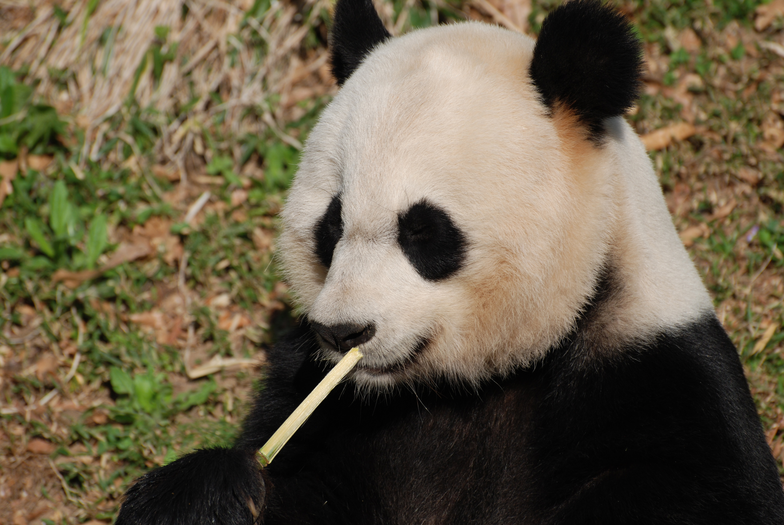
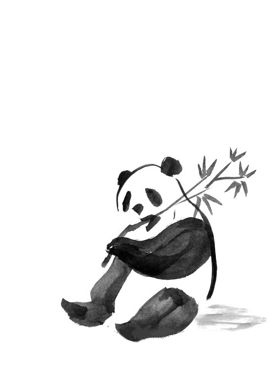

Giant pandas are found only in the temperate forests of China. Although classified as a carnivore, the panda’s diet consists almost exclusively of bamboo. Despite being one of the most popular animals in the world, giant pandas are threatened by habitat fragmentation and unsustainable development. It is estimated that 1,800 pandas remain in the wild. WWF is the primary international conservation organization protecting pandas and their habitat.
When WWF was first founded in 1961, a giant panda living at the London Zoo inspired our simple black and white logo—an icon that has since evolved into a rallying symbol of global conservation. Today, WWF protects wild pandas by preventing habitat loss caused by human development and encroachment, the most serious threat to their long-term survival. For years, led by WWF-China and now with new partners including Disneynature, we’ve worked to preserve and link important panda corridors across China, spanning more than 34 million acres, three provinces, and two of the country’s largest river basins. In the process, we’ve protected critical habitat for other species too: snub-nosed monkeys, takins, and snow leopards among them. The efforts are yielding success: Wild panda numbers are finally rebounding after years of decline. In September, the International Union for Conservation of Nature (IUCN) announced that pandas have been upgraded from “endangered” to “vulnerable” on the global list of species at risk of extinction, following a population growth of nearly 17% over the past decade. Yet while this recent status change for pandas is encouraging, they’re not out of the woods yet. Says Lo Sze Ping, CEO of WWF-China, “Everyone should celebrate this achievement. But pandas remain scattered and vulnerable, and much of their habitat is threatened by poorly planned infrastructure projects. Remember, there are still only 1,864 left in the wild.” The photo above is from Disneynature's upcoming film Born in China. A portion of opening-week ticket sales in the US and China will benefit WWF's panda conservation efforts.
if you want to help by adopting a panda, click on the panda
While the panda's future remains precarious, its numbers are slowly increasing in the wild. There are now more panda reserves than ever before and more projects to help people sustainably coexist with them. This is all thanks to the efforts of the Chinese authorities and local communities, and the support of WWF and people like you!